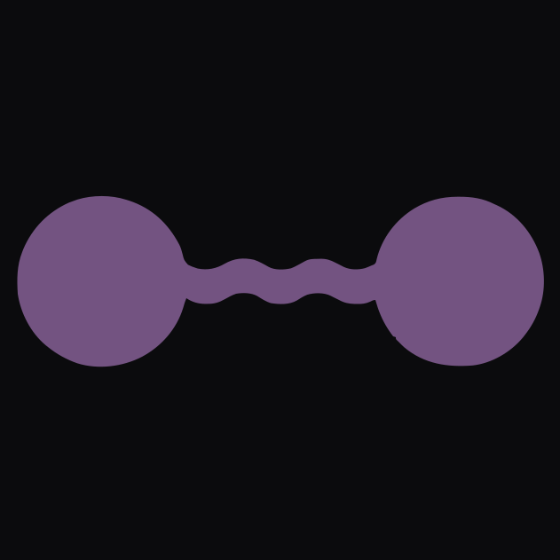

A small corner of the internet.
Just six digits that happen to exist.
Some things on the internet are built for millions of people.
Some are built for exactly one.

Just six digits that happen to exist.
Some things on the internet are built for millions of people.
Some are built for exactly one.